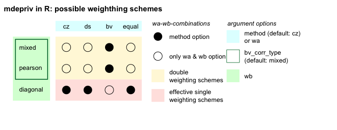
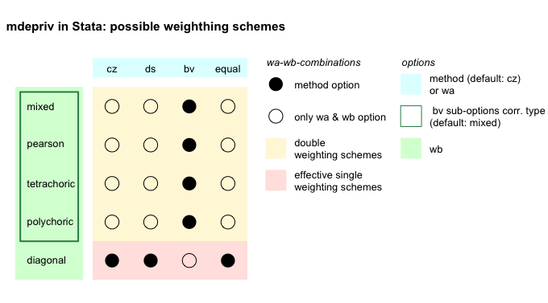

vignettes/what_is_different_from_stata.Rmd
what_is_different_from_stata.RmdThe mdepriv function is an adaptation in
R of a homonymous user-written
Stata command (Pi Alperin & Van
Kerm, 2009) for computing basic synthetic scores of multiple
deprivation from unidimensional indicators and/or basic items of
deprivation. To facilitate orientation and usage of
mdepriv, this R implementation
follows the Stata features as closely as
possible. There are only a small number of differences:
weightedCorr,
on which the calculation of the second factor relies, treats
tetrachoric correlations as
polychoric. The different handling of
tetrachoric correlations in
R and Stata causes
minuscule differences in the weights in models that include more than
one binary item.mdepriv in
R does not reproduce this spurious
option.

mdepriv in R admits both
non-integer and integer sampling weights for all
methods. mdepriv in
Stata admits integer frequency weights for all
methods, as well as non-integer analytic
weights for methods without double-weighting
(which include method =
cz, ds or
equal).
The option force allowing calculations
in Stata, even if items are not limited to the
[0, 1] range, is not implemented; such item sets produce invalid
aggregate deprivation statistics. In R
therefore, in preparation, any item with values on [0, max], where max
> 1, has to be transformed. For more detailed information on suitable
transformations have a look at the section ‘Details’ on
mepriv’s help page.
help("mdepriv")Differently from Stata, in
R observations with missing item values have
to be removed in preparation. Rationale and code can be found under
section Handling
Missing Values in the vignette Get Started
with mdepriv.
Models with double-weighting work with an internal parameter known as rhoH. rhoH is determined by the central point in the largest gap in the ordered sequence of distinct correlation coefficients between all item / indicator pairs. As such, by default, rhoH is a data-driven quantity. The user has the option to set a value for rhoH; this is rarely called for, except when a constant rhoH is desired for the comparison of several such models. The implementation between Stata and R differs:
mdepriv to calculate the data-driven value in models with
double-weighting, or else leave it as NA.The Stata option vec for passing user-defined weights to items is called user_def_weights for a more intuitive argument in R.
Pi Alperin, M. N. and Van Kerm, P. (2009), ‘mdepriv - Synthetic indicators of multiple deprivation’, v2.0 (revised March 2014), CEPS/INSTEAD, Esch/Alzette, Luxembourg. http://medim.ceps.lu/stata/mdepriv_v3.pdf (2020-01-02).